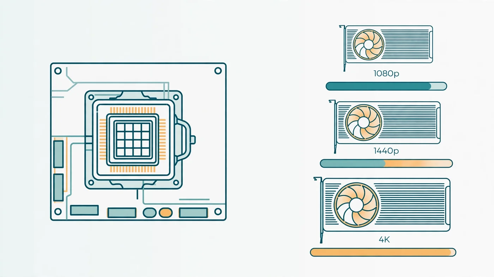

Best GPU for Ryzen 5 9600X: Which Graphics Card Pairs Best?
The best GPU for Ryzen 5 9600X is the Radeon RX 9070 XT for most builders: a 16GB card that matches the six-core Zen 5 chip at 1440p high refresh and entry-level 4K without leaving performance on the table. If ray tracing, DLSS or CUDA matter more than raster value, the GeForce RTX 5070 Ti is the Nvidia alternative at the same tier. On a tighter budget, the RX 9060 XT 16GB is the sensible pick for 1080p and solid 1440p. This guide explains why each tier fits, where the 9600X itself becomes the limit, and which cards waste your money.

Best GPU for Ryzen 5 9600X: The Short Answer
The Ryzen 5 9600X is a strong mid-range gaming CPU, and it pairs best with a GPU one tier below the flagship. At 1440p — the resolution this chip is built for — the graphics card does most of the work, so the 9600X can feed cards far above its price class. At 1080p the balance flips, and the CPU starts to set the ceiling. Match the card to your monitor first, then to your budget.
- Best overall: Radeon RX 9070 XT 16GB — 1440p high refresh and entry-level 4K, the best raster value at this tier.
- Best Nvidia: GeForce RTX 5070 Ti 16GB — same tier, stronger ray tracing, DLSS 4 and CUDA for creators.
- Best mainstream: GeForce RTX 5070 12GB or Radeon RX 9070 16GB — strong 1440p cards when the top tier is more than you need.
- Best budget: Radeon RX 9060 XT 16GB — high-refresh 1080p and solid 1440p for the least money.
- Best 1080p: GeForce RTX 5060 Ti 16GB — high-refresh 1080p with DLSS and Nvidia's encoder.
Every pick above carries at least 12GB of VRAM, and all but one carry 16GB. That is deliberate: a new card bought in 2026 should not be the thing that runs out of memory first. Our VRAM guide explains the numbers behind that floor.
What the Ryzen 5 9600X Can (and Cannot) Feed
The Ryzen 5 9600X is a six-core, 12-thread Zen 5 processor with a boost clock of up to 5.4 GHz, a 65W default TDP, DDR5 memory and PCIe 5.0 on the AM5 platform. That combination — fast single-thread performance, a modern platform and low power draw — is why it punches above its core count. Six fast cores are enough for nearly every current game, because games still lean on a handful of threads for their per-frame work.
What it cannot do is hide at low resolutions. At 1080p with a high-refresh monitor, the graphics card finishes each frame so quickly that the CPU has only a few milliseconds to prepare the next one, and the 9600X becomes the limit in CPU-heavy titles. At 1440p and 4K the frame takes longer to render, the GPU becomes the slow half of the frame, and the same CPU keeps up with cards that cost far more than it does. That is the whole logic of this guide: the right GPU for the 9600X is the one that is the limit at your resolution, not one the CPU has to wait for. Our resolution bottleneck guide explains how the balance shifts as resolution rises.
It is also worth knowing the chip's ceiling. The 9600X has no 3D V-Cache, so in the most cache-sensitive games — simulation-heavy titles and competitive shooters pushing very high frame rates — an X3D chip like the Ryzen 7 9800X3D will pull ahead. If that is your whole workload, the CPU is the upgrade, not the GPU. Our best GPU for Ryzen 7 7800X3D guide covers the X3D pairing from the other side.
Best Overall GPU for Ryzen 5 9600X: Radeon RX 9070 XT
The RX 9070 XT is the default answer for a gaming-first 9600X build. It is a 16GB GDDR6 card built on AMD's RDNA 4 architecture, and it is the strongest raster performer in its price class — the card that turns the 9600X into a high-refresh 1440p machine and a capable entry-level 4K one. At 1440p with high or ultra settings, the GPU is the limit in nearly every game, which is exactly the balance you want: the CPU is not holding the card back, and the card is not waiting on the CPU.
The 16GB framebuffer is the other half of the recommendation. Modern games at 1440p with high textures are already pushing past 12GB in demanding titles, and the 9070 XT's memory means texture settings stay high without the stutter that comes from spilling to system RAM. FSR 4 upscaling is there when you want it, and the card's 304W board power is modest for its class.
Buy it when gaming performance per dollar is the priority and you are happy with AMD's software. Skip it when ray tracing at maximum settings, CUDA-based work or Nvidia's broadcast and encoding tools matter more than raster value — that is the RTX 5070 Ti's case, below. And check the street price before you buy: the 9070 XT launched at a $599 MSRP, and its value case depends on staying near it.
Best Nvidia GPU for Ryzen 5 9600X: GeForce RTX 5070 Ti
The RTX 5070 Ti is the best Nvidia pairing for the Ryzen 5 9600X, and the right pick when the ecosystem matters as much as the frame rate. It carries 16GB of GDDR7 memory, 8,960 CUDA cores and a 300W total graphics power, and it is the stronger card for ray tracing, path tracing and DLSS 4 with Multi Frame Generation. In games with heavy ray tracing, it pulls clear of the RX 9070 XT; in pure raster it trades blows and usually costs more.
The case for the 5070 Ti is not just gaming. CUDA acceleration, NVENC encoding and Nvidia's creator software make it the better card for streaming, video editing and AI workloads run on the same PC — and if your 9600X build earns its keep as well as playing games, that matters. Our video editing bottleneck guide covers how those workloads split between CPU and GPU.
Choose it over the 9070 XT when ray tracing, DLSS, CUDA or streaming features are worth a premium to you. Choose the 9070 XT when they are not. Either card is balanced with the 9600X at 1440p and 4K — the difference is the feature set, not the bottleneck.
Best Mainstream GPU for Ryzen 5 9600X: RTX 5070 and RX 9070
Not every 9600X build needs a top-tier card. The RTX 5070 and RX 9070 sit one step down and are the right answer when the target is 1440p at high settings rather than maximum everything. The RTX 5070 carries 12GB of GDDR7, a 250W total graphics power and the full DLSS 4 feature set; the RX 9070 carries 16GB of GDDR6 and stronger raster performance for the money in most titles.
The choice between them comes down to the same split as the tier above. The RTX 5070 wins on ray tracing, DLSS and Nvidia's encoder; the RX 9070 wins on VRAM headroom and raster value. The 5070's 12GB is still workable at 1440p, but it is the one compromise in this guide — in the most texture-heavy games, it will be the first card here to ask you to turn a setting down. If you plan to keep the card for several years, the RX 9070's extra memory is the safer bet; if you stream or create, the 5070's encoder is worth more than the memory.
Both cards are balanced with the 9600X at 1440p, and both leave the CPU with headroom. Our best CPU for RTX 5070 guide covers the pairing from the card's side.
Best Budget GPU for Ryzen 5 9600X: RX 9060 XT 16GB
The RX 9060 XT 16GB is the most sensible budget pairing for the Ryzen 5 9600X, and the card to buy when the budget is the constraint rather than the monitor. It is a 16GB GDDR6 card aimed squarely at high-refresh 1080p and solid 1440p gaming, and it is the cheapest card in this guide that does not compromise on memory. That matters more than raw speed at this tier: a budget card with 8GB will hit its VRAM ceiling long before it hits its performance ceiling.
At 1080p, the 9060 XT 16GB and the 9600X are well matched — the card is usually the limit, and the CPU has room to spare. At 1440p it is still a good pairing at high settings, though the most demanding games will ask for medium textures or upscaling. It is also the most power-friendly pick here, running comfortably on a 550W power supply, which keeps the total build cost down.
The one warning is the 8GB version of the same card. It exists, it is cheaper, and it is the wrong buy for a new build in 2026: the same GPU with half the memory will age twice as fast. Check the box — or the listing — and buy the 16GB model.
Best 1080p GPU for Ryzen 5 9600X: RTX 5060 Ti 16GB
If your monitor is 1080p and you want Nvidia, the RTX 5060 Ti 16GB is the pick. It is a 16GB GDDR7 card with DLSS 4, Multi Frame Generation and NVENC, and it is the best high-refresh 1080p card in Nvidia's current lineup for a 9600X build. At 1080p the GPU is the limit in most games, and the 16GB framebuffer means texture settings stay high even as games get heavier.
Be honest about the use case, though. A 5060 Ti is a 1080p card: at 1440p it is serviceable with upscaling, but the cards above it earn their price there. And the same warning applies as with the RX 9060 XT — there is an 8GB version of this card, and it is not the one to buy. The 16GB model is the pairing; the 8GB model is a false economy. Our DLSS, FSR and frame generation guide explains what upscaling can and cannot do for a card at this tier.
When the Ryzen 5 9600X Becomes the Bottleneck
The 9600X is not a limitless CPU, and it is worth knowing where it becomes the bottleneck so you can spend on the right part. The pattern is consistent: the CPU is the limit when frames are cheap for the GPU and expensive for the processor — low resolution, high refresh rates, CPU-heavy games.
- 1080p competitive shooters at very high frame rates: in CS2, Valorant or Apex Legends at 240Hz and above, the CPU sets the ceiling. A stronger CPU with more cache raises frame rates here; a stronger GPU does not.
- Simulation and strategy games: titles with heavy simulation, large unit counts or complex AI lean on single-thread speed and cache. The 9600X is capable, but an X3D chip is faster.
- Streaming while gaming on CPU encoding: software encoding competes with the game for CPU time. Use the GPU's encoder instead — NVENC or AMD's encoder — and the problem mostly disappears.
At 1440p and 4K, none of this applies to the cards in this guide. The GPU is the limit, and the 9600X keeps up. If you are unsure which side limits your own PC, run the two-minute test in our bottleneck check guide before you buy anything.
VRAM: Why 16GB Is the Safe Floor in 2026
Every card recommended at 1440p or above in this guide carries 16GB of video memory, and that is not a coincidence. Modern games at 1440p with high or ultra textures can use more than 12GB, and the trend is upward as texture packs grow. When VRAM runs out, the game spills textures to system RAM and the frame time spikes — stutter that no amount of GPU speed fixes, because the card is waiting on memory, not work.
The RTX 5070 is the one exception here at 12GB, and it is workable rather than ideal: fine at 1440p high settings today, but with less headroom than its 16GB rivals over a card's lifetime. The 8GB cards — the 8GB versions of the RX 9060 XT and RTX 5060 Ti, and any older 8GB card still on shelves — are the ones to avoid for a new build. They are cheap for a reason, and the reason shows up in the first demanding game you install. Our VRAM guide breaks down the numbers by resolution and settings.
Power Supply: What Wattage Each Pairing Needs
The 9600X itself is easy on power at 65W, so the power supply is decided by the graphics card. Buy a quality unit from a known brand — wattage is not the whole story, and a cheap high-wattage unit is worse than a good lower-wattage one. The vendor recommendations below are system-power figures, not card-only draw.
- RX 9070 XT / RTX 5070 Ti: 750W. AMD and Nvidia both list 750W as the minimum system power for these cards.
- RTX 5070: 650W, per Nvidia's recommendation for the 250W card.
- RX 9070: 650W is the sensible floor for this tier.
- RTX 5060 Ti 16GB: 600W, per Nvidia's recommendation.
- RX 9060 XT 16GB: 550W is enough — the most power-friendly pick in this guide.
Also check the physical fit and the power connectors before you order: top-tier cards are long and use two or three 8-pin connectors, while the RTX 5070 Ti uses Nvidia's 12V-2x6 connector. Our PSU guide covers what an undersized supply really does and how to size one properly.
GPUs to Skip With the Ryzen 5 9600X
Some cards are wrong for this CPU not because they are bad, but because the pairing wastes money or creates a limit you will feel every day.
- Any 8GB card for a new build: the 8GB RX 9060 XT, the 8GB RTX 5060 Ti, and older 8GB cards. The VRAM ceiling arrives before the performance ceiling.
- RTX 5080 and RTX 5090 for most 9600X builds: the 9600X can feed an RTX 5080 at 4K, where the card is the limit — our best CPU for RTX 5080 guide covers that pairing — but at 1440p the CPU becomes the limit and the extra money buys little. The 5090 is overkill for this CPU at any resolution most people play at.
- Older high-end cards at new prices: a previous-generation flagship can look like a bargain until you check its VRAM, power draw and missing features. Compare it against the current cards above on equal terms — memory, upscaling support and warranty — before you buy.
- A second GPU: multi-GPU gaming is effectively dead. One good card beats two older ones in every game that matters.
How to Check Your Own Pairing Before You Buy
Guides give you the shortlist; your own measurements give you the answer. Before you spend money, run the PC Bottleneck Calculator with your exact parts, resolution and workload — it estimates which side is the limit for your build (see its methodology page for how the estimate works). Then verify it on your own PC: play your most demanding game for ten minutes with an overlay showing CPU and GPU usage, and watch which one sits near full while the other waits.
Two quick tests settle it. Lower the resolution one step: if the frame rate barely changes, the CPU is the limit; if it jumps, the GPU is. And watch the 1% lows, not just the average — a pairing that looks balanced on average FPS can still stutter if the CPU cannot keep the frame times steady. Our good bottleneck percentage guide explains how to read those numbers without overthinking them.
Free PC Bottleneck Calculator — Estimate CPU and GPU balance for your resolution and workload: check whether your CPU, GPU or VRAM is the slow half of the frame on the PC Bottleneck Calculator (see its methodology page) before you spend money on a GPU for your Ryzen 5 9600X.
Conclusion
The best GPU for Ryzen 5 9600X is the Radeon RX 9070 XT for most builders — 16GB of VRAM, the best raster value at its tier, and a card the six-core Zen 5 chip can feed at 1440p high refresh and entry-level 4K. The RTX 5070 Ti is the right alternative when ray tracing, DLSS, CUDA or creator software matter more than raster value. On a budget, the RX 9060 XT 16GB is the sensible pick, and the RTX 5070 or RX 9070 cover the mainstream middle. Whatever you buy, make it a 16GB card, size the power supply to the vendor's recommendation, and check the street price on the day — the right pairing is the one that is the limit at your resolution, and with the 9600X that means buying the card your monitor actually needs.
Frequently Asked Questions
What is the best GPU for Ryzen 5 9600X?
The best GPU for Ryzen 5 9600X for most builders is the Radeon RX 9070 XT: 16GB of VRAM, strong raster performance at 1440p high refresh and entry-level 4K, and a good match for the six-core Zen 5 chip. Choose the GeForce RTX 5070 Ti instead when ray tracing, DLSS, CUDA or creator software matters more than raster value, and the RX 9060 XT 16GB when the budget only stretches to a mainstream card.
Is the Ryzen 5 9600X enough for an RTX 5070 Ti?
Yes, at 1440p and 4K, where the graphics card is the limit in nearly every game. The Ryzen 5 9600X is a six-core, 12-thread Zen 5 processor with a boost clock of up to 5.4 GHz, and it has the single-thread speed to keep an RTX 5070 Ti fed once the resolution is high enough that the GPU does the heavy work. At 1080p with a high-refresh monitor, the CPU can become the limit in CPU-heavy titles — that is a resolution problem, not a bad pairing.
Will the Ryzen 5 9600X bottleneck an RTX 5070 at 1080p?
It can, in CPU-heavy games at 1080p with high refresh rates, because the RTX 5070 finishes frames quickly and the processor has to prepare the next frame in just a few milliseconds. The same pairing is balanced at 1440p, where the GPU becomes the limit. If your monitor is 1080p and you chase very high frame rates in competitive titles, a stronger CPU with more cache helps; if you play at 1440p, the 9600X and RTX 5070 are a good match.
How much VRAM do I need with a Ryzen 5 9600X?
16GB is the safe floor for a new card in 2026. Modern games at 1440p with high or ultra textures can push past 12GB, and 8GB cards already run into texture limits in demanding titles. Every card recommended in this guide at 1440p or above carries 16GB, except the RTX 5070 at 12GB — which is still workable at 1440p, but has less headroom than its 16GB rivals.
What PSU do I need for a Ryzen 5 9600X and RX 9070 XT?
A quality 750W power supply. AMD lists a 750W minimum system power recommendation for the RX 9070 XT, which draws 304W on its own, and the 65W Ryzen 5 9600X leaves plenty of headroom on top of that. The same 750W guidance applies to the RTX 5070 Ti. Mid-range pairings need less: NVIDIA recommends 650W for the RTX 5070 and 600W for the RTX 5060 Ti 16GB, and the RX 9060 XT 16GB runs happily on a 550W unit.
Sources
Official documentation referenced in this guide:
- AMD: Ryzen 5 9600X (6-core Zen 5 processor, up to 5.4 GHz boost, 65W TDP)
- AMD: Radeon RX 9070 XT (16GB GDDR6 graphics card)
- NVIDIA: GeForce RTX 5070 Family (RTX 5070 Ti 16GB GDDR7, RTX 5070 12GB GDDR7 specifications)
- NVIDIA: DLSS (AI upscaling and frame generation technology)
- AMD: FidelityFX Super Resolution (upscaling technology)